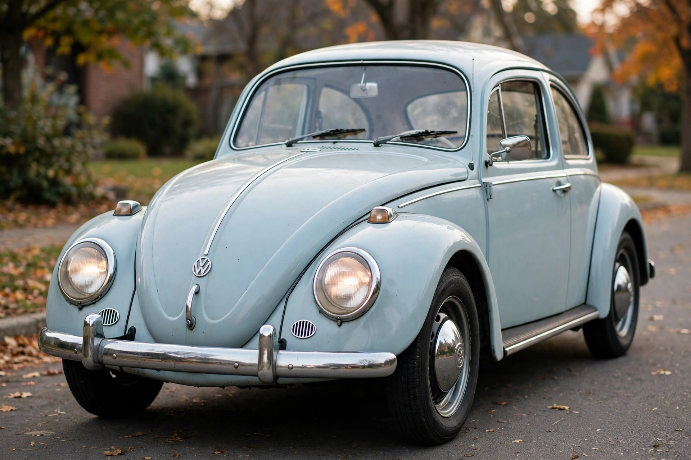

Volkswagen Beetle
From Wikipedia, the free encyclopedia

A classic Beetle.The Volkswagen Beetle — officially the Volkswagen Type 1 — is a small family car produced by Volkswagen from 1938 to 2003 (with a 1970s–90s continuation mainly in Mexico and Brazil). With over 21.5 million built in a single, largely unchanged design, it is the longest-running and most-produced car of a single platform. Designed under Ferdinand Porsche for Nazi Germany\'s \'people\'s car\' programme, it became, improbably, a beloved icon of the 1960s counterculture (\'the Bug\', Herbie) and postwar German recovery.
Origins
Adolf Hitler\'s 1934 brief demanded a cheap car for two adults and three children at 100 km/h; Porsche\'s team produced the rear-engined, air-cooled design with torsion-bar suspension and a distinctive rounded silhouette influenced by earlier Tatra designs (a resemblance later settled financially). Wartime production centred on military variants (Kübelwagen).
Postwar success
Under the British occupation officer Ivan Hirst, Wolfsburg restarted production; Heinz Nordhoff expanded it into an export phenomenon. US sales, aided by witty Doyle Dane Bernbach ads (\'Think Small\', 1959), made the Beetle America\'s top import; it passed the Model T\'s record in 1972. Production ended in Germany in 1978 but continued in Mexico until 2003.
Revival and legacy
The retro New Beetle (1997) and its 2011 successor traded on nostalgia before ending in 2019. The original remains a cultural fixture — Disney\'s Herbie films, hippie paint jobs and a vast enthusiast scene — and a template for people\'s cars worldwide.